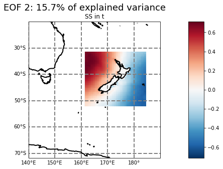
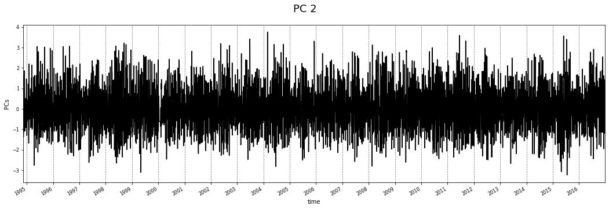
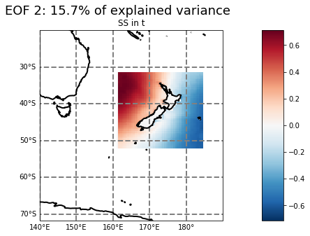
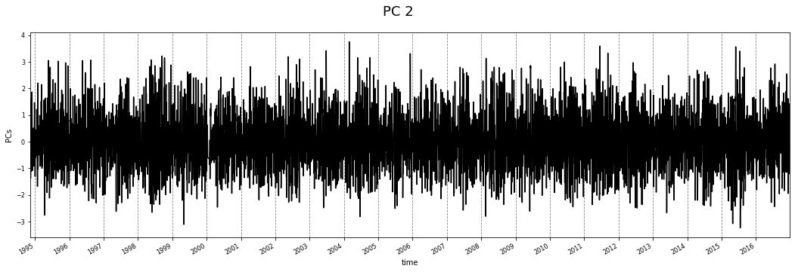

CCA ANALYSIS¶
# basics
import os, sys
# arrays
import numpy as np
import pandas as pd
import xarray as xr
# plotting
import matplotlib.pyplot as plt
import cartopy.crs as ccrs
# append sscode to path
sys.path.insert(0, os.path.join(os.path.abspath(''), '..'))
# data viewer
from sscode.data import Loader, load_moana_hindcast_ss
from sscode.cca import CCA_Analysis
# warnings
import warnings
warnings.filterwarnings('ignore')
# load the data
load_cfsr_moana_uhslc = Loader(
data_to_load=['cfsr','moana','uhslc'], plot=False
)
loading the sea-level-pressure fields...
loading daily resampled data...
loading the Moana v2 hindcast data...
loading and plotting the UHSLC tidal guages...
calculate the CCs¶
plotting and calculating first the corresponfing PCs
# calculate the canonical correlations
ccs_data, pcs, scalers = CCA_Analysis(
load_cfsr_moana_uhslc.predictor_slp.interp(
longitude=np.arange(140,190),
latitude=np.arange(-70,-20)
).sortby('latitude',ascending=False),
load_moana_hindcast_ss(daily=True).interp(
lon=np.arange(161,185,0.5),
lat=np.arange(-52,-31,0.5)
).sortby('lat',ascending=False),
time_resample='1D',
cca_plot=True
)
loading the Moana v2 hindcast data (ss)...
lets calculate the CCs...
lets calculate the PCs...
calculated PCs matrix with shape:
(11353, 2500)
plotting 2 components with 1 EOFs + PC...
being the EOFs the slp, the gradient, in steps t, t-1
lets calculate the PCs...
calculated PCs matrix with shape:
(8066, 2016)
plotting 2 components with 1 EOFs + PC...
being the EOFs the slp, the gradient, in steps t, t-1
 



we will use 18 PCs from the pressure and 15 from the ss
R score: 0.04 -- in TEST data
plotting 3 components with slp and ss EOFs...
being the EOFs the reconstructed cannonical loadings